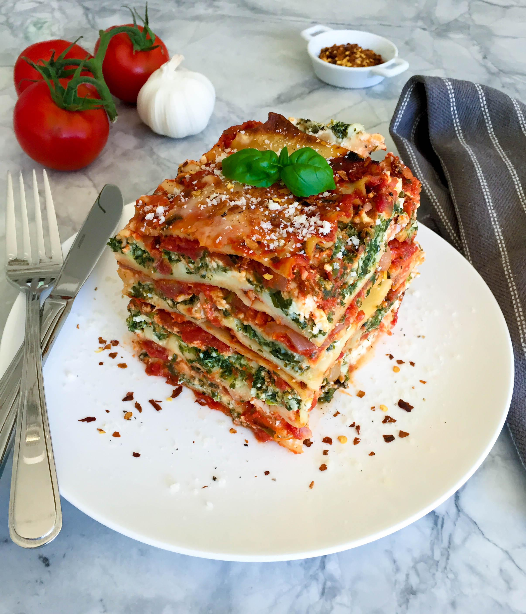

How to make Delicious Lasagna

Lasagne are a type of pasta, possibly one of the oldest types,
made of very wide, flat sheets. Either term can also refer to
an Italian dish made of stacked layers of lasagne alternating
with fillings such as ragù, vegetables, cheeses, and seasonings
and spices, like Italian seasoning, such as garlic, oregano
and basil.
Ingredients
- 1 lb. ground beef
- 3 cloves garlic (minced)
- 1 cup button mushrooms (chopped, 3-4 medium)
- 1 onion (medium, chopped)
- 1 Tbsp. dried basil
- 1 can diced tomatoes (796 mL, 26.9 fl oz)
- 2 cans tomato paste (156 mL, 5.5 fl oz)
- 9 lasagna noodles (Barilla, half of a 454g box)
- 3 cups cottage cheese
- 1 cup grated Parmesan cheese
- 2 Tbsp. dried parsley
- 2 large eggs (beaten)
- 1/2 tsp. black pepper
- 1 lb. mozzarella cheese (grated)
Directions
- In a large saucepan, over medium heat, brown the ground beef.
Drain off the fat, and then add the garlic,
mushrooms, onion and basil to the pan.
- 3 cloves garlic (minced)
- 1 cup button mushrooms (chopped, 3-4 medium)